nina’s sketchbook
trigger warnings:
none
tags:
I’m am a traditional artist and I turn it into digital art.. sometimes/chaotic chill fun silly idk what else to put/
Fandoms: hooky, ramparts of ice, romantic killer, kny, blue period, apothecary diaries, green yuri, witch hat atelier, madoka magica, and lots more!
The type of media pencils, oil pastels, anything I find in my room I hope you see this!!
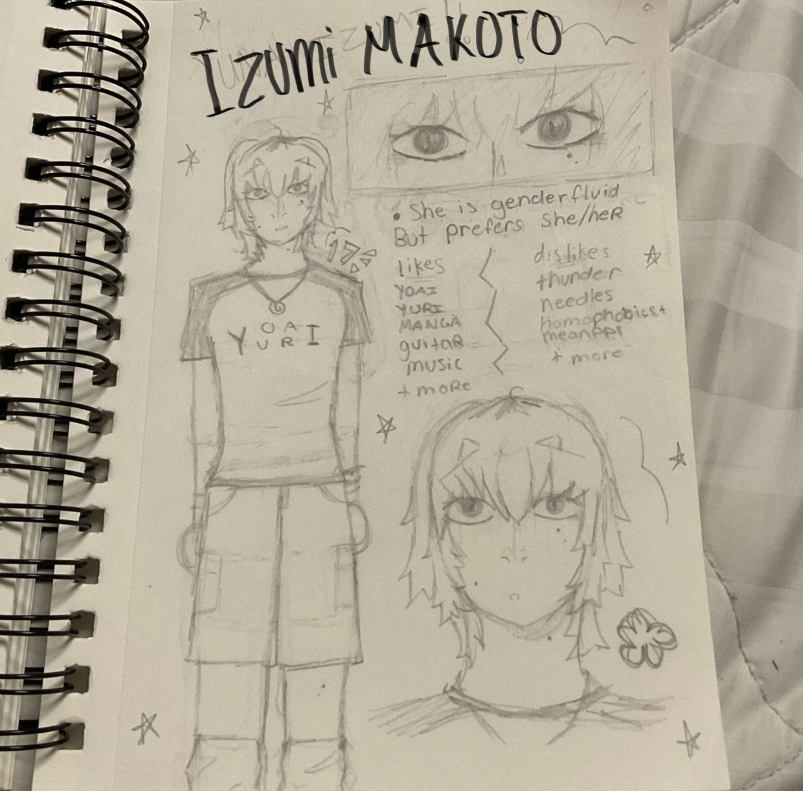
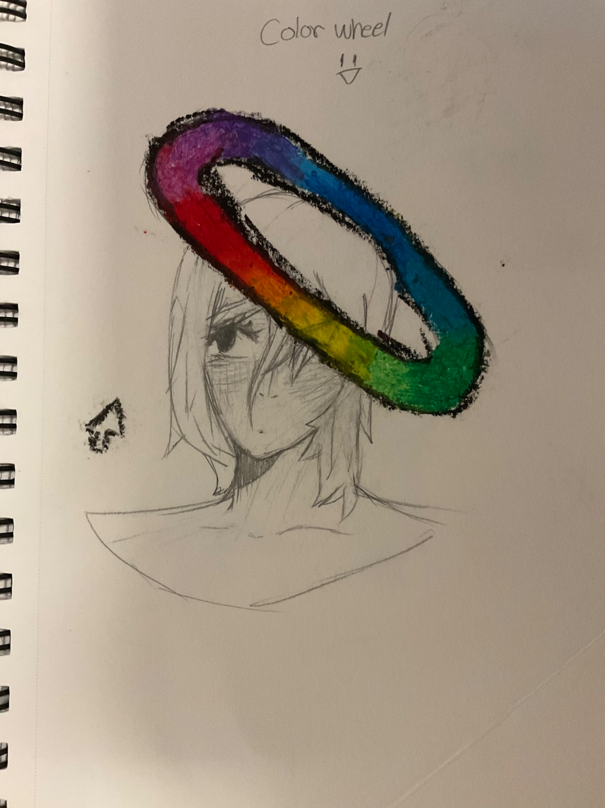
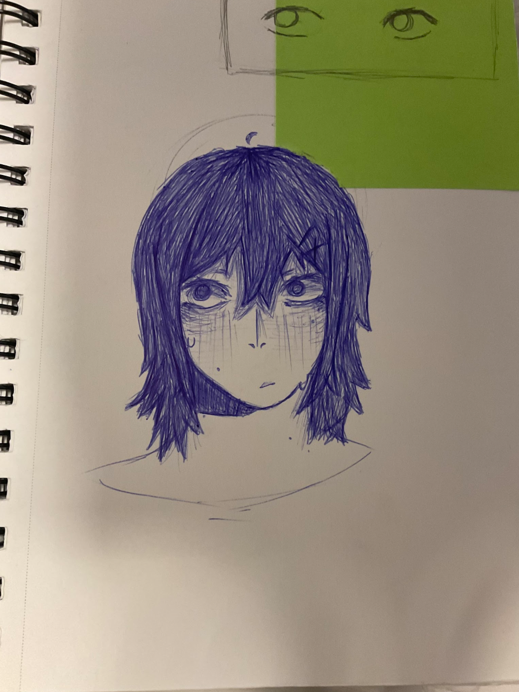
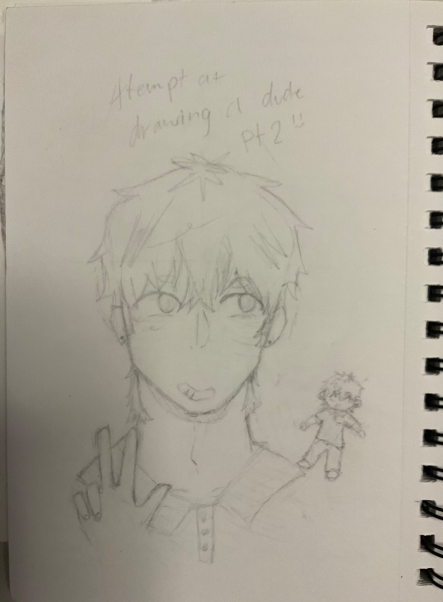
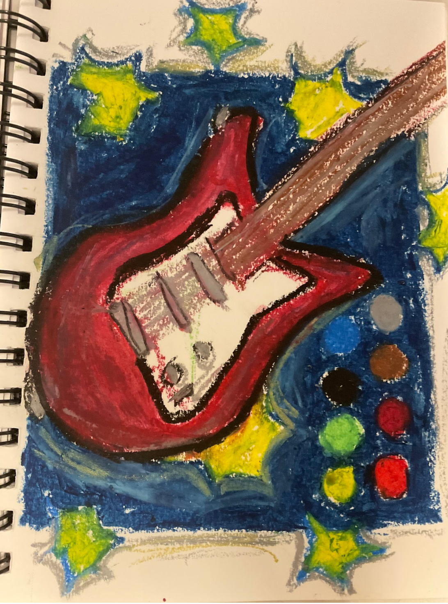
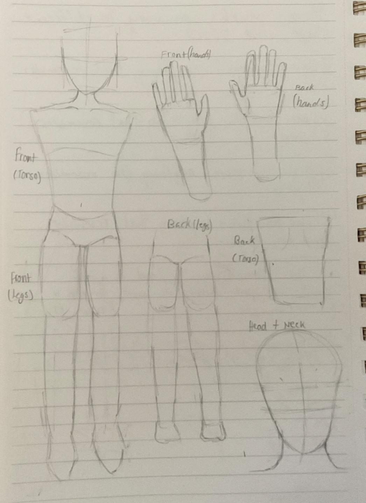
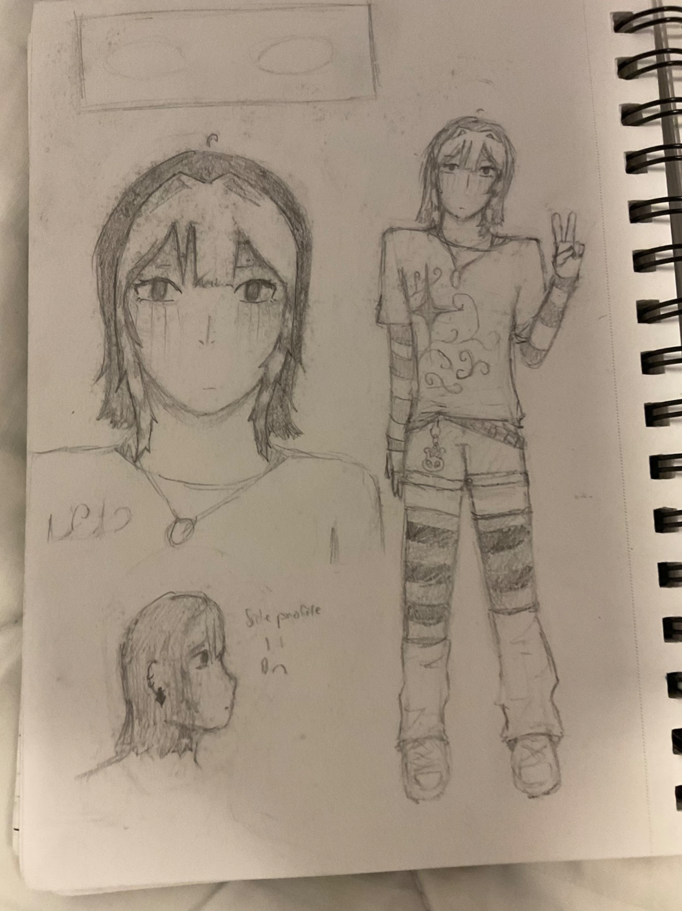
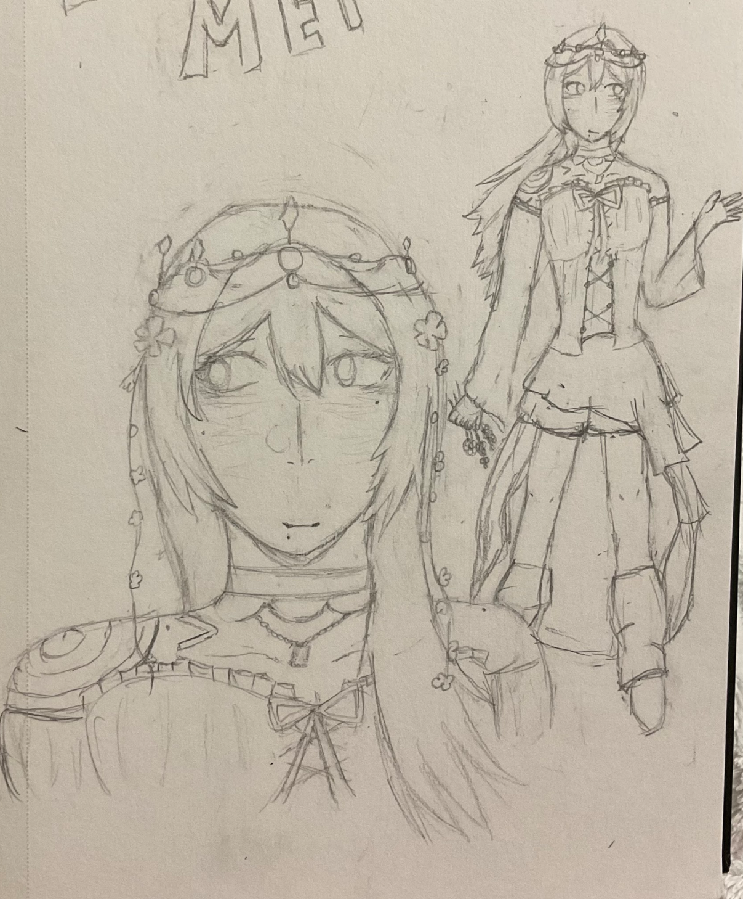
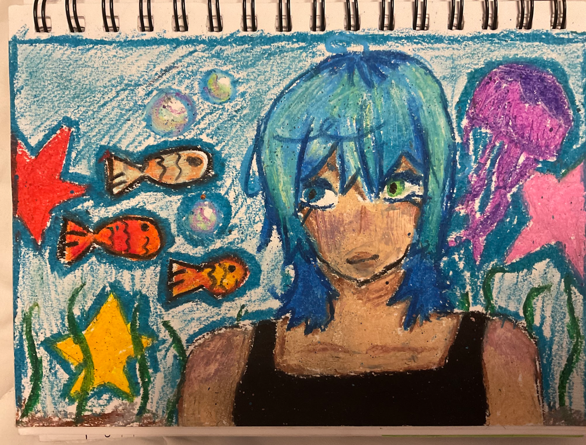
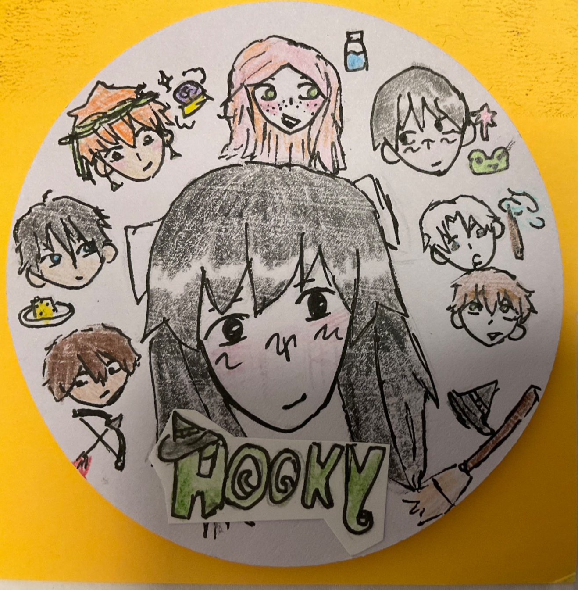
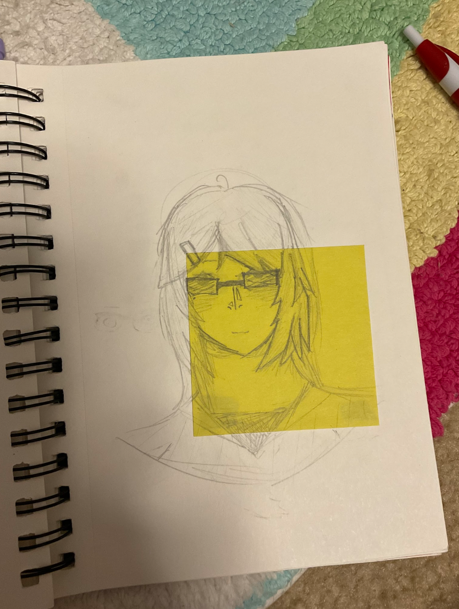
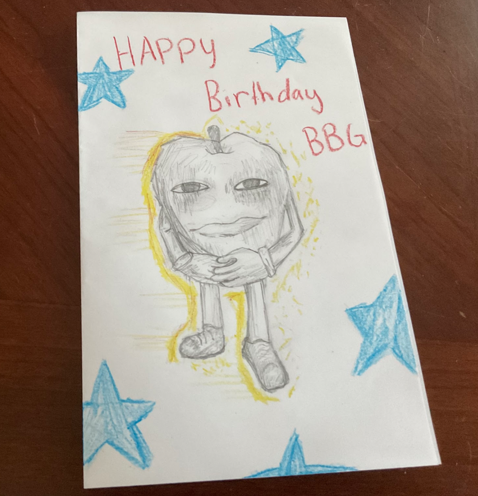
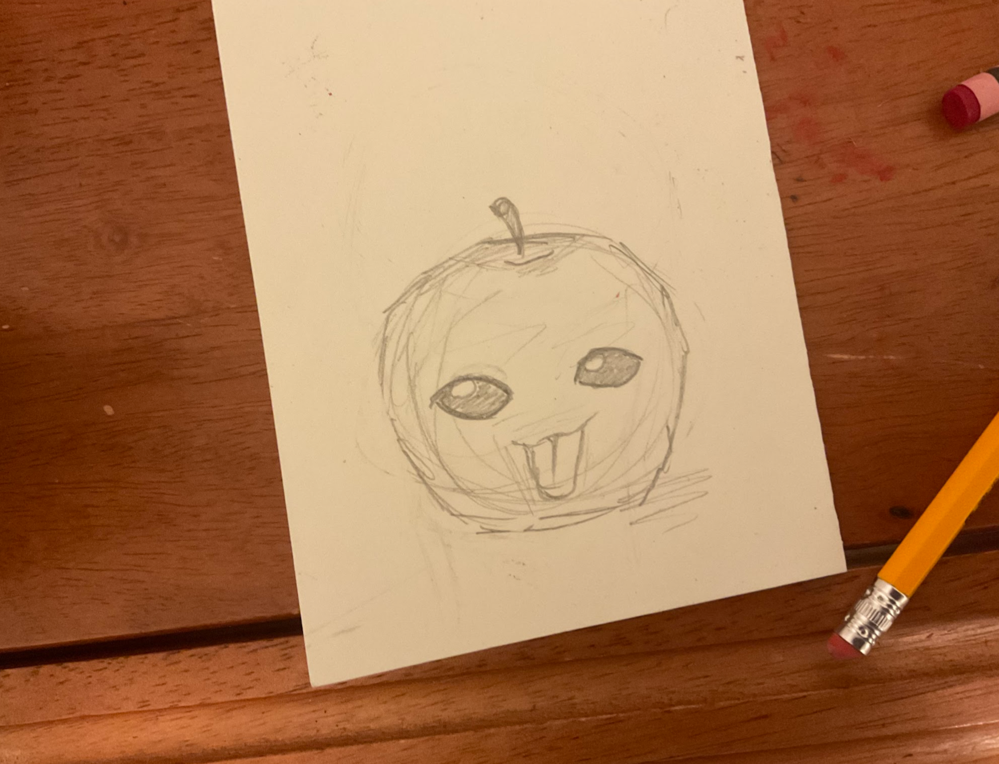
return to library